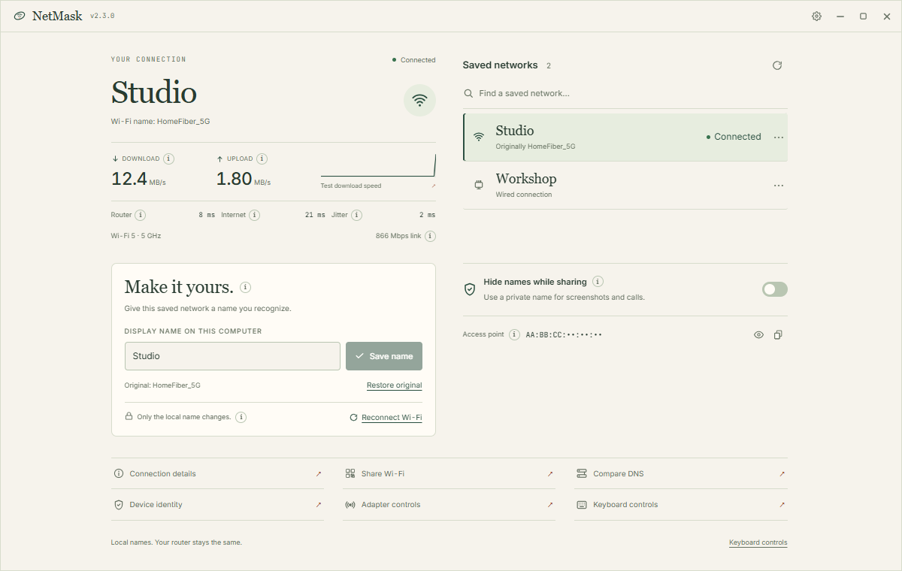

Turn an unfamiliar local network label into something you recognise. Read the connection. Step private details out of view. Keep the original route home.
At first, it is only a name on a screen—technical, distant, easy to ignore.
NM
STUDIO
NEXT STOPUNDERSTANDING
0104
STOP 01
MAKE IT FAMILIAR
A name you can live with.
Choose a saved network and give its local label a name that belongs in your world. NetMask records the original before anything changes, so “Studio” never erases the way back.
HomeFiber_5GbecomesStudioORIGINAL SECURELY RECORDED
STOP 02
READ THE CONNECTION
Numbers with somewhere to go.
See transfer activity, router response, internet response and the Wi-Fi detail your system can provide. Plain explanations stay beside the readings—not hidden in a manual.
18msROUTER RESPONSE
42msINTERNET RESPONSE
STOP 03
PREPARE FOR SHARING
Let the details leave the carriage.
Before a call or recording, sharing mode masks supported names and identifiers inside NetMask. It helps keep the app display clean; it does not make the connection anonymous or protect other apps.
SHARING MODE · ON
NETWORK
••••••••
DEVICE IDENTITY
HIDDEN FOR SHARING
STOP 04
THE ACTUAL APP
Small enough to stay close.
Paper and Dark themes, useful tools without dashboard sprawl, and a window that keeps working down to 320 × 200. Built with Tauri, Rust, React and TypeScript.

Fictional networks and sample measurements shown.
DESIGN SYSTEM TEST YARD
How the line handles the little things.
A wider set of components, labels and real product language for judging the direction beyond its hero.
TYPE / 01
Studio is connected.
Router response looks steady. Internet response is a little slower than the last reading.
HOMEFIBER_5G → STUDIOCONTROLS / 02NOTICES / 03
Original recordedYour previous label can be restored.
Permission neededWindows will ask before changing this label.
DATA ROW / 04
StudioCONNECTED18 ms
WorkshopSAVED—
Guest RoomMASKED•••
ACTION TICKET / 05
CONNECTION CHECKReady before the call?
Measure the router and internet response, then create a private report.